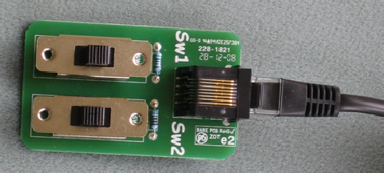
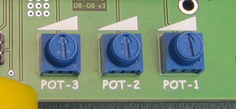
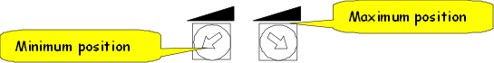
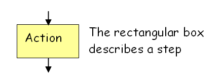
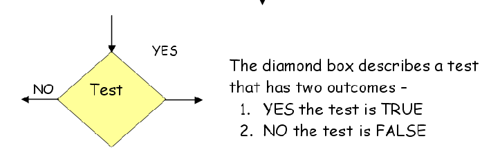

|
Term |
Description |
|
Connector
Terminal |
Name given to the screw points where wires can be connected to the circuit board. Often referred to as terminals.
The robot has 16 screw terminals. Four sets of 3 for the front and rear bump sensors and two sets of 2 for the motor connections. |
|
Circuit board |
Technology to create electricity carrying wires on a board. The wires are made of the metal copper and run on both sides of the board. The normal colour for a circuit board is green. The electronic components are then soldered onto the board to make electrical connections.
The kit contains two circuit boards.
|
|
Switch controller |
Simple robot control unit with two switches.  Each switch has three positions. |
|
Differential
or
Differential speed |
The robot has two motors. Although they are well made with identical materials they are never exactly the same. Therefore, when we set the same speed on the two motors, the robot does not keep a straight path. It moves on a curve because one motor will be slightly faster than the other. The DIFFERENTIAL adjustment allows the user of the robot to input a small adjustment to compensate for this fact.
Activity 5 allows the children to experiment with this feature and in an exaggerated
form is used for the associated 10- |
|
Mode |
The robot can work in many ways. Each of these ways is called a MODE. For example mode “J0” uses the switch controller to allow the user to drive the robot forwards, backwards, spin left and spin right. The switches A, C and D are generally used to move between moves (although they sometimes have other uses)
Switch- Switch- Switch- |
|
POT |
Pot is short for potentiometer. There are three blue pots on the board named POT- 
Each pot can be turned from an 8 o’clock position to a 4 o’clock position 
The computer is able to read the position and convert it into a number from 0 to
255. In the modes where adjustments are possible, pressing SWITCH- |
|
Solder |
Solder is a metal that melts at a low temperature and is used to connect components to wires and circuit boards. |
|
Algorithm |
Recipe to solve a problem. Usually based on a sequence of simple steps. |
|
Flowchart |
Simple method of describing an algorithm using s set of graphical symbols.
The two main symbols are   |
|
Infrared |
Our eyes see only part of the full spectrum of radiation. The bit we see goes from visible violet to visible red. Just above visible red is radiation called infrared radiation. Usually referred to as IR radiation. Some animals see infrared (eg snakes) and we have developed special cameras that can see it. Nature programmes on TV now regularly use infrared cameras to watch animals at night, as animals emit IR radiation in the form of heat. The following picture shows that the infrared light is just beside the RED end of the visiblew light spectrum.
The most common use of IR is in the remotes you use with your TV and audio systems.
|
|
Sensor |
Electronic component that converts a physical quantity (e.g. light, heat, position, etc) into an ectrical signal that can be read by the computer
|
|
Strip sequence |
Set of commands that are input from two strips of black and white lines on a card. A strip will look like this
|
Heriot-


List of technical terms relating to the activities of the project.